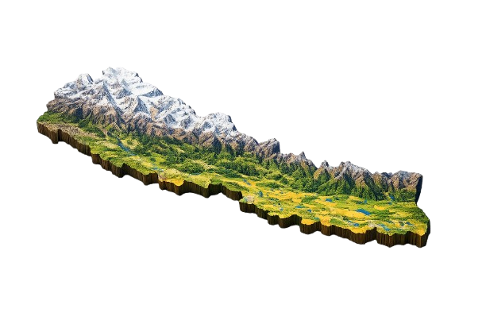

Explore Nepal
Mountains, culture, regions, and stories of Nepal
Tourism
Nepal with rich ancient cultures set against the most dramatic scenery in the world is a land of discovery and unique experience. For broad minded individuals who value an experience that is authentic and mesmerizing, Nepal is the ideal destination. Come and revel in the untouched and the undiscovered and uncover yourself.
It is unsurpassed that the sheer diversity Nepal boasts, from steamy jungle and Terai to the icy peaks of the world"s highest mountains means that the range of activities on offer. Trekking, mountaineering , rafting in spectacular scenery are just three things Nepal is famous for. Activities as diverse as Elephant Polo and a micro-light flight through the Himalayas show that in Nepal, the only boundary is your imagination. With 15 National & Wildlife Parks (two are UNESCO Heritage sites) Nepal is one of the last places on earth you can spot the Asiatic rhinoceros and the Royal Bengal Tiger.
For many, Nepal"s greatest attraction is its people. The traditions and famous hospitality of its many different groups are indeed a major part of what makes Nepal so special. From remote mountain villages to medieval hill-towns and the ancient cities of the Kathmandu Valley, the people of Nepal are always welcoming. Come and experience the strong and unique flavors of Nepalese cuisine, prepared with love and a depth of flavor or join in and celebrate at one of the many festivals year round. In fact, with more festivals than days of the year, there is nowhere else in the world that can offer as many festivities as Nepal.
Tourism is one of the mainstay of Nepalese economy. It is also a major source of foreign exchange and revenue. Possessing 8 of the 10 highest mountains in the world, Nepal is a hotspot destination for mountaineers, rock climbers and people seeking adventures. The Hindu, Buddhist and other cultural heritage sites of Nepal, and around the year fair weather are also strong attractions.
Nepal is the country of the Mount Everest, the highest mountain peak in the world, and the Birthplace of Gautama Buddha- Lumbini. Mountaineering and other types of adventure tourism and ecotourism are important attractions for visitors. There are other important religious pilgrimage sites throughout the country for the followers of various sects and religions.
Map of Nepal

Map of Nepal
Nepal, a landlocked country in South Asia, spans an area of approximately 147,516 km2 (56,956 mi2). It sits wedged between two powerful countries, sharing its northern border with China's Tibet Autonomous Region and its other borders with India to the east, west, and south. Nepal comprises three distinct geographical regions: the Terai Plains (Madhesh), the Hill Region (Pahad), and the Mountain Region (Himal).
Madhesh run parallel to Nepal's southern border. Also known as the Terai Plains, this region spans a width of about 26 to 32 kilometers (16 to 20 miles) and a length of over 800 kilometers (497 miles). The terrain here is mostly flat, characterized by fertile soils that give way to lush agriculture, providing sustenance for a significant portion of Nepal's population. The Terai region is also home to many of the country's developing industrial centers.
Ascending northwards from the Terai Plains, the topography morphs into what is known as the Hill Region or Pahad. This region covers about 64% of the total land area and presents a mixed landscape of valleys, hills, and smaller mountains, the elevation ranging from 800 meters to 4,000 meters (2,624 feet to 13,123 feet) above sea level. The Hill Region is not as densely populated as the Terai but nonetheless holds significant settlements, including Nepal's capital, Kathmandu.
Further north, the Mountain Region (known as Himal or Parbat) shrouds the remainder of Nepal. This region houses part of the Himalayan range, including eight of the ten highest peaks in the world. The most famous among these is Mount Everest, soaring to an elevation of 8,848.86 meters (29,031.7 feet) above sea level. These icy peaks and rugged terrains, while less hospitable for human habitation, attract a multitude of climbers and adventure seekers from around the globe.
Current Affairs
Supreme Court annuls arrest warrant against Deuba couple, bars detention: The court found that the authorities failed to establish valid legal grounds for arrest under the anti-money laundering law, which requires a reasonable belief that an accused may flee, destroy evidence, or obstruct the investigation.
23-member EU delegation to call on PM Shah on Tuesday: The prime minister is set to meet the foreign ambassadors and diplomats for the second time since assuming office on March 27.
Five bridges along Bheri Corridor left incomplete for seven years: The delay along the Jajarkot-Dolpa road continues to disrupt transport, inflate prices and force travellers to risk dangerous river crossings during the monsoon.
India's recurring barriers expose battle over Nepali tea and Darjeeling tea: The move has sparked a diplomatic row between the two countries, with Nepal accusing India of violating trade. Political pressure and trade competition—not quality alone—lie behind repeated restrictions on Nepali tea exports to India, industry insiders say.
No hospital in Nepal is equipped to handle potential Ebola cases: Nepal's health system is not prepared to handle potential Ebola cases, according to a report by the World Health Organization (WHO). The report found that no hospital in Nepal has the necessary facilities or trained staff to manage Ebola patients, and that the country lacks a national plan for responding to an outbreak. Doctors warn that delay in preparedness could turn even a single infection into a major health crisis.
Journalist Kishor Shrestha denies bribery allegations in audio row involving former Home Minister Gurung: Journalist Kishor Shrestha has denied allegations of bribery in an audio recording that surfaced. The Chinese Embassy objects to claims of its nationals’ involvement in an alleged audio recording; Shrestha calls it a “coordinated attempt” to discredit him and his media outlet.
Regions
Nepal is commonly divided into the Himalayan Region, the Hilly Region, and the Terai Region. These regions make Nepal very diverse in terms of climate, landform, culture, lifestyle, agriculture and tourism.
Nepal's main drawcard, the Nepali Himalaya span the length (east to west) of the country, across many regions and districts, forming the borderline between Nepal and Tibet. Some treks are easily accessible—with numerous teahouse lodges along the way—while others are very remote, requiring multiple domestic flights and camping equipment. Most people's visit to Nepal wouldn't be complete without a trek or a visit to a viewpoint looking out over the Himalaya. For a complete list of treks, check out our article on the main trekking regions of Nepal.
Most travelers to Nepal arrive in Kathmandu (unless you're coming overland from India). While it is a big, congested, polluted city, Kathmandu holds some of the most beautiful and well-preserved cultural heritage sites in the world. Plus, it doesn't take long to get out into the surrounding countryside. The city is encircled by still-lush farmland and villages, and while they are increasingly being encroached upon by urban sprawl, there are still many peaceful places to explore around the valley. Besides visiting cultural sites, you can hike, mountain bike, dine at great restaurants, or escape to an overnight homestay or resort.
Pokhara is a favorite among many travelers, and for good reason. The small city is cleaner than Kathmandu, less congested, closer to the mountains, and full of adventure activities to try (such as mountain biking, paragliding, and the world's second-longest zip-line!) It's a handy base for trekking in the Annapurna region, which can be seen right there on clear days, as many trailheads are just a couple of hours' drive away. There are also numerous short trips that can be taken in and around the Pokhara Valley, such as to the pretty Begnas and Rupa Lakes, to the Peace Pagoda above one side of Pokhara's Phewa Lake, or to Sarangkot Hill on the other.
First-time visitors to Nepal often overlook the fact that the entire southern edge of the country, bordering India, consists of hot plains and steamy jungles. There's barely a hill in sight down there, let alone a snow-capped mountain. While most of the cities of the Terai don't offer much for visitors, aside from being transportation hubs to other destinations, there are a few significant points of attraction. The Chitwan National Park is Nepal's most popular jungle national park and is easily accessible from Kathmandu or Pokhara. Base yourself in Sauraha or quieter Barauli for some jungle adventures. You're almost guaranteed to spot a one-horned rhinoceros in Chitwan, thanks to a successful conservation effort.
The climate of the Terai is more north Indian than Himalayan. That means cold, short winters but searing heat for much of the rest of the year, from March to October. The best time to visit is between October and March, when the days are generally warm but the nights cold. Towns all along the Terai are well-connected to other parts of Nepal by tourist and local bus, as well as by air.
About This Website
My name is Aarjan Subedi. I am a first year Computer Science student at the University for the Creative Arts, Farnham.
I built a website about Nepal because I am from Nepal and I wanted to share my love for Nepal while demosntating my skills in HTML, CSS and JavaScript.
I chose to develop a website about Nepal because I wanted to show my love for Nepal and share with the world how beautiful Nepal is. Nepal is rich in natural beauty, culture, mountains, history, and adventure. Through this website, I wanted to present Nepal in a creative, interactive, and customizable way.